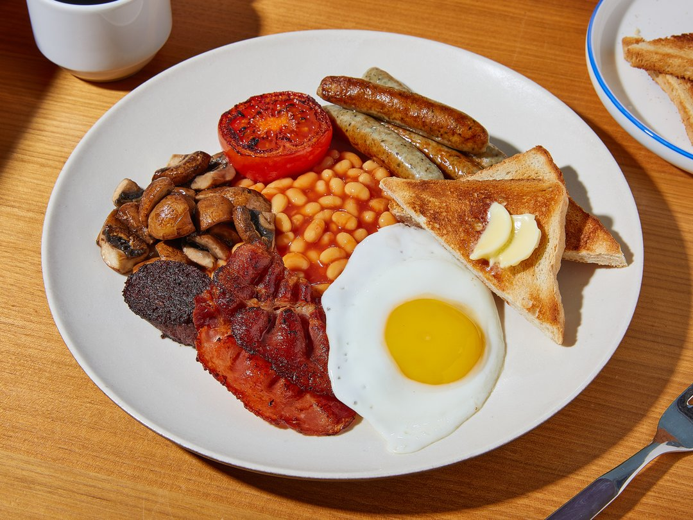

Full English Breakfast

Description
"The English breakfast (also called full English breakfast, full monty or fry-up) is a hearty and filling breakfast
traditionally consisted of sausages, fried eggs, grilled tomatoes, beans (baked beans), bacon, mushrooms and
buttered toast. Often you will also find white or black pudding (English blood sausage) as well as hash browns.
Whilst it is commonly referred to as a "full English breakfast", in the various regions of Great Britain and Ireland
it is also named according to the region i.e. "full Scottish", "full Welsh", "full Irish" etc. You can also find
regional variations of this classic breakfast: In Scotland, for example, "tattie scones" (a kind of potato pancake)
and haggis are served, while the Welsh people enjoy their breakfast with "laverbread" (a seaweed dish). All of this
is often accompanied by coffee, tea or orange juice. The breakfast can also be made vegetarian or vegan. Simply
replace sausages, bacon and butter with plant-based alternatives. For a vegan version, either omit the egg or
prepare scrambled eggs with an egg substitute."
Ingredients
- pork sausages
- bacon
- blood sausages
- baked beans
- tomatoes
- button mushrooms
- sandwich bread
- eggs
- salt
- pepper
- butter
- vegetable oil
Steps
-
Preheat the oven to 100 °C/212 °F on top/bottom heat. Slowly heat the baked beans in a small saucepan and keep
warm on low. Meanwhile, wash and quarter the mushrooms. Halve the tomatoes horizontally. Heat some oil in a
large pan and fry the mushrooms on all sides for approx. 6 min. over high heat. Place mushrooms in an ovenproof
pan and keep warm in the oven.
-
Heat oil again in the same pan and fry the tomatoes for approx. 3 min. on each side. Remove the tomato halves
from the pan and add to the mushrooms in the oven and keep warm.
-
Wipe out the pan and heat oil again. Add bacon and fry for approx. 4–6 min. until bacon is crispy. Keep the
bacon warm in the oven. Discard excess oil or use it to fry the sausages. Remove skin from blood sausages. Fry
the bratwurst and blood sausages together for approx. 4 min. until crispy and golden brown. Keep the contents of
the pan warm in the oven.
-
Pour away the fat and wipe out the pan. Fry the eggs in the same pan. Meanwhile, toast the sandwich bread until
golden brown. Then cut in half crossways to form triangles. Spread toast with some butter. Arrange all
ingredients side by side on a large plate.